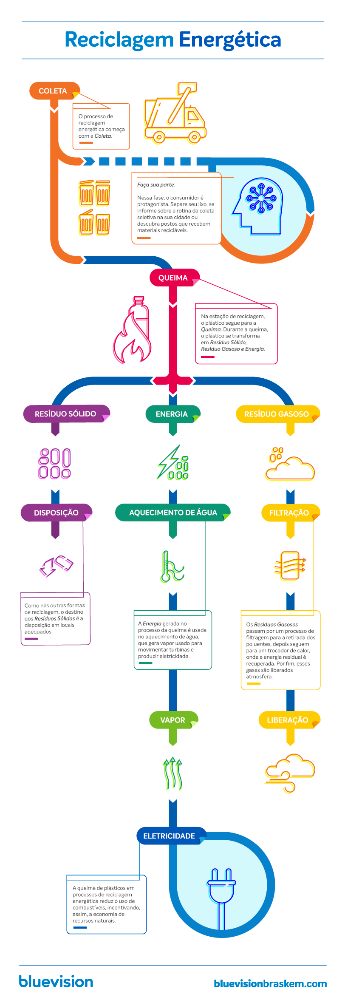

Descarte do plástico
Mesmo sabendo que o plástico é um material reciclável e que pode ser transformado em novos produtos, é comum surgirem dúvidas sobre como prepará-lo para o descarte corretos.
Descarte do plástico em lixeira de reciclagem
Imagem: Mundo do Plásticos
As dicas são:
1 - Coloque o resíduo reciclável em sacos: O ideal é manter os plásticos utilizados em uma sacola. Isso facilita a coleta pelos catadores e evita a contaminação a partir de outros resíduos. É importante que os resíduos estejam em uma única lixeira, podendo, assim, serem recolhidos pela coleta seletiva.
2 - Descartar a sacola de supermercado no cesto de reciclados: As sacolas de supermercado e os sacos usados para embalar frutas e legumes são feitos de PEAD (Polietileno de Alta Densidade), material que é reciclável. Se descartados corretamente, podem voltar à indústria e se transformar em novos produtos, também reciclável.
3 - Limpar em balagens de molho e produtos de limpeza:A limpeza dessas embalagens facilita o trabalho de triagem em cooperativas. Elas podem ser lavadas com água corrente ou até com a água liberada pela máquina de lavar, evitando o desperdício.
4 - Descarte corretamente mesmo os pequenos pedaços de plástico: Mesmo os menores resíduos plásticos podem ser reciclados. Ao serem encaminhados para a reciclagem, eles se juntarão aos demais para se transformar em novos produtos.
5 - Descarte as cestas de plástico mole usadas para embalar frutas: Destinando-as ao cesto de recicláveis, elas também podem voltar para a cadeia produtiva.
“O descarte correto das embalagens plásticas gera diversas vantagens, como: equilíbrio ambiental, consumo consciente, cria oportunidades de emprego, movimenta a economia, gera energia e incentiva empresas”.
Funcionamento da coleta do plástico
A coleta de plástico é um procedimento simples que pode ser realizado
nos lares, empresas, escolas, hospitais e qualquer outro ambiente que utiliza esse material.
É muito comum encontrar lixeiras específicas para o descarte do plástico e os cidadãos têm a possibilidade de separarem
os lixos devidamente na própria casa, contribuindo com a economia e preservação ambiental.
A coleta de plástico é um procedimento simples que pode ser realizado nos lares, empresas, escolas, hospitais e qualquer outro ambiente que utiliza esse material. É muito comum encontrar lixeiras específicas para o descarte do plástico e os cidadãos têm a possibilidade de separarem os lixos devidamente na própria casa, contribuindo com a economia e preservação ambiental.
Coleta de diversos plásticos realizada pela empresa Colim Imagem: Colim
Como se da a reciclagem dos plásticos
O plástico é considerado uma das mais importantes invenções da humanidade, sendo matéria-prima de diversos produtos utilizados no cotidiano.
A aplicação do plástico é atestada pelo ciclo da reciclagem, que viabiliza o consumo sustentável, reduz dos custos de produção e aumenta a eficiência,
sem produzir impactos ambientais. Mas como é feita a reciclagem dos plásticos?
Basicamente, a reciclagem dos plásticos consiste em três processos: coleta e separação dos resíduos de acordo com o seu material; revalorização,
na qual o material já separado passa pelo processo para que volte a ser matéria-prima; e
transformação, no qual o material transformado em matéria-prima gera um novo produto.

Processo de reciclagem do plástico
Imagem: Pinterest
Tipos de reciclagem de plásticos:
Reciclagem Mecânica
A reciclagem mecânica de plásticos é um dos métodos mais comuns realizados atualmente e consiste em transformar os plásticos pós-industrial e pós-consumo
em pequenos grânulos, através do processo de moagem. Essas pequenas partículas podem ser utilizadas na fabricação de novos materiais plásticos.
O processo da reciclagem mecânica ocorre da seguinte maneira: o plástico é coletado por meio de associações de catadores, cooperativas e pela coleta municipal;
em seguida, no processo de triagem, ocorre a separação dos diferentes tipos de plásticos e a limpeza retirando os restos de sujeira dos conteúdos. Por fim,
o plástico granulado é produzido se transformando em matéria-prima para novos produtos.
Processo de reciclagem mecânica
Imagem: Bluevision
Reciclagem Química
A reciclagem química reprocessa o plástico para transformá-lo em materiais petroquímicos básicos, que servem de matéria-prima para a criação de produtos
de alta qualidade. Entretanto, o modelo químico necessita de grandes quantidades de plástico para ser economicamente viável.
Processo de reciclagem química
Imagem: Bluevision
Reciclagem Energética
A reciclagem energética transforma através da incineração o plástico em energia térmica e elétrica, aproveitando o poder calorífico presente nos plásticos.
Apesar desse tipo de reciclagem não ser realizada no Brasil, ela é muito utilizada no exterior, como na Noruega.

Processo de reciclagem energética
Imagem: Bluevision
Plásticos que podem ser reciclados
Os plásticos são divididos em dois grupos, de acordo com as suas características de fusão ou derretimento: Termoplásticos (podem ser reciclados) e
Termorrígidos (não derretem quando aquecidos, portanto, não podem ser reciclados).
Os termoplásticos são tipos de plásticos que podem ser reprocessados diversas vezes, pois quando aquecidos amolecem e são remoldados. Como por exemplo,
as embalagens, sacolas de supermercado, garrafas PET e frascos de produtos de limpeza e higiene.
São termoplásticos: Polietileno de Baixa Densidade (PEBD), Polietileno de Alta Densidade (PEAD), PVC, Poliestireno (OS), Polipropileno (PP), PET,
Poliamidas (como o Nylon).
Exemplos de termoplásticos
Imagem: Indústria do Plástico
O plástico é considerado uma das mais importantes invenções da humanidade, sendo matéria-prima de diversos produtos utilizados no cotidiano. A aplicação do plástico é atestada pelo ciclo da reciclagem, que viabiliza o consumo sustentável, reduz dos custos de produção e aumenta a eficiência, sem produzir impactos ambientais. Mas como é feita a reciclagem dos plásticos?
Basicamente, a reciclagem dos plásticos consiste em três processos: coleta e separação dos resíduos de acordo com o seu material; revalorização, na qual o material já separado passa pelo processo para que volte a ser matéria-prima; e transformação, no qual o material transformado em matéria-prima gera um novo produto.
Tipos de reciclagem de plásticos:
Reciclagem Mecânica
A reciclagem mecânica de plásticos é um dos métodos mais comuns realizados atualmente e consiste em transformar os plásticos pós-industrial e pós-consumo em pequenos grânulos, através do processo de moagem. Essas pequenas partículas podem ser utilizadas na fabricação de novos materiais plásticos.
O processo da reciclagem mecânica ocorre da seguinte maneira: o plástico é coletado por meio de associações de catadores, cooperativas e pela coleta municipal; em seguida, no processo de triagem, ocorre a separação dos diferentes tipos de plásticos e a limpeza retirando os restos de sujeira dos conteúdos. Por fim, o plástico granulado é produzido se transformando em matéria-prima para novos produtos.
Processo de reciclagem mecânica
Imagem: Bluevision
Reciclagem Química
Processo de reciclagem química
Imagem: Bluevision
Reciclagem Energética
Processo de reciclagem energética
Imagem: Bluevision
Plásticos que podem ser reciclados
Exemplos de termoplásticos
Imagem: Indústria do Plástico